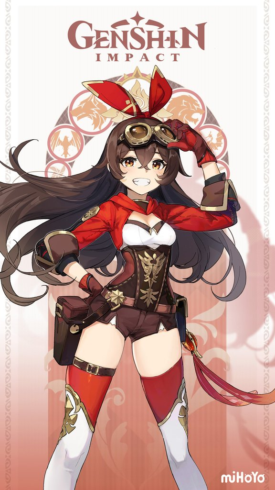

Эмбер


«"Наивная и задорная девушка, скаут Ордо Фавониус. Благодаря отличному владению планером она стала трехкратным чемпионом Мондштадта по полётам. Будучи восходящей звездой Ордо Фавониус, Эмбер всегда готова к задачам любой сложности.» ©Эмбер Эмбер — один из игровых персонажей Genshin Impact. Член рыцарей Ордо Фавониус в Мондштадте.
Описание
ВнешностьУ Эмбер длинные тёмно-каштановые волосы, золотистые глаза, атлетическое телосложение и светлая кожа. Она одета в короткие кожаные шорты, белую рубашку, кортсетный пояс с золотой отделкой и короткую красную куртку с капюшоном. Также носит белые с красным сапоги-чулки до середины бедра и красные перчатки. Наряд дополняют кожаный пояс с сумочками, украшенный брелоком с изображением её Глаза бога, очки и красная бандана, приподнятые кончики которой напоминают кроличьи ушки. Характер
Эмбер – лучший скаут Ордо Фавониус. В эпоху, когда скауты уже особо никому не нужны, она продолжает безупречно выполнять свои обязанности. После нескольких часов общения с Эмбер, вы чувствуете, что словно бы дружите с ней всю жизнь. Вершины гор, глубины озер, или столик в "Хорошем охотнике" — везде можно обнаружить следы этого неугомонного исследователя в красном. Ни одна подозрительная личность не останется незамеченной.
Сюжет
Эмбер становится первым человеком, присоединившимся к Путешественнику. Сразу после того, как герой выходит из Шепчущего леса, он сталкивается со скаутом Эмбер, и та предлагает ему проводить его до Мондштадта, поскольку дорога до него стала опасной из-за хиличурлов. Начиная с этого момента она входит в партию. В городе Эмбер предлагает встретиться с Джинн — магистром Ордо Фавониус и дарит Путешественнику планер, который сразу же оказывается полезным, поскольку позволяет оставаться в воздухе во время нападения Ужаса вихря и атаковать дракона. После обсуждения произошедшего в штаб-квартире Ордо Эмбер сопровождает Путешественника в храм Сокола. В Мондштадте Эмбер сообщает Путешественнику, что для пользования планером необходима лётная лицензия, для получения которой нужно пройти особый экзамен. Она вручает герою инструкцию (по ошибке отдаёт книгу сказок) и указывает место, где состоится испытание. Этап в Мондштадте заканчивается у штаб-квартиры Ордо Фавониус, где девушки узнают, что таинственный вор Птеродактиль, использующий планер, похитил из собора артефакты, и решают выследить и поймать его. Они проникают в развалины, где укрываются Птеродактиль с подручными, пробираются через них, используя навыки управления планером и оказываются перед пропастью, за которой стоит Птеродактиль и насмехается над Эмбер, говоря, что она не сможет долететь до него. Та же верит в свои способности и чувствует восходящий поток воздуха, который позволяет ей благополучно совершить кажущийся невозможным полёт. По другую сторону пропасти Эмбер и Путешественник побеждают Птеродактиля и арестовывают его. По возвращении в Мондштадт Эмбер вручает Путешественнику лётную лицензию и советует летать по правилам.
Боевая информация
| Тип | Название | Иконка | Описание |
|---|---|---|---|
| Боевой навык — Обычная/заряженная атака | Первоклассный стрелок | Обычная атака: До пяти выстрелов из лука. | |
| Боевой навык - Элементальный навык | Барон Зайчик | На Барона Зайчика всегда можно положиться Барон Зайчик:
Долгое нажатие: | |
| Боевой навык - Взрыв стихии | Огненный дождь | Эмбер выпускает град огненных стрел, который наносит периодически Пиро урон по площади. | |
| Пассивный навык 1 | Сто стрел - все в цель! | Шанс критического попадания навыка Огненный дождь увеличивается на 10%, а его зона поражения - на 30%. | |
| Пассивный навык 2 | Подавляющий огонь | Прицельные выстрелы по слабым местам противника увеличивают силу атаки на 15% на 10 сек. | |
| Пассивный навык 3 | Чемпион Полётов | Уменьшает потребление выносливости активного персонажа во время полёта на 20%. Не суммируется с пассивными талантами, дающими точно такие же эффекты. |